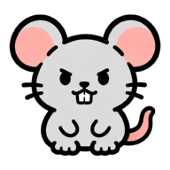

묘한특허
먼저 등록하는 쪽이 이깁니다.
같은 발명, 특허는 하나. 냥이들이 막아내는 동안 출원하세요.
솔로 플레이
또는 함께
1v1 대전 방 만들기
----
이 코드를 함께할 사람에게 알려주세요
입장하기
내 청사
YOUR OFFICE
22
원부 내구
₩ 85
특허료
0/10
라운드
현재 랭킹 점수
D
0
강화효과
냥타워
합성효과
?
같은 종류·같은 레벨
의 고양이
3마리
를 모으면
다음 레벨 고양이 1마리
로 합성할 수 있습니다.
Lv2
공격력(×1.85) 증가
Lv3
공격력(×3.42), 치명타(×1.25) 증가
내 타워 현황
침입자 정보
?
침입자
THREATS
라운드 진행
ROUND
나가기
라운드 1 시작
속도 ×1
나
준비 중
상대를 기다리는 중
상대
라운드 진행 중
상대 청사
OPPONENT

방해 공작
내 병력
-
⚔ 1:1 대전
110.0초